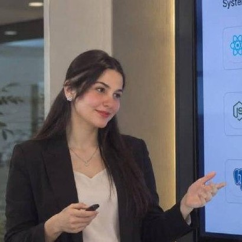
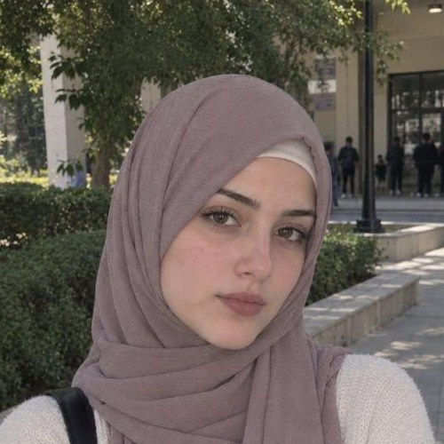

عن دليل فعاليات الجامعة
رؤيتنا وأهدافنا الأكاديمية
تعتبر منصة "دليل فعاليات الجامعة الافتراضية السورية" المرجع الشامل للأنشطة والفعاليات الجامعية. هدفنا الأساسي هو بناء بيئة تفاعلية تربط الطلاب بالأنشطة الأكاديمية، التقنية، الثقافية، والرياضية المقامة ضمن الجامعة.
نسعى من خلال هذا الدليل إلى تسهيل وصول المعلومة للطلاب، تشجيع روح المبادرة والعمل الجماعي، وإبراز الأنشطة الطلابية بطريقة عصرية وسهلة الاستخدام عبر واجهة مستخدم مريحة ومتجاوبة.
ماذا يقدم الدليل للطلاب؟
- تغطية شاملة ومحدثة لجميع الورشات، الهاكاثونات، والمسابقات العلمية والثقافية.
- تصنيف دقيق للفعاليات حسب المجال (تقني، علمي، ثقافي، إبداعي، رياضي، اجتماعي).
- إمكانية البحث والفلترة حسب المجال والموقع ونطاق التاريخ، مع حفظ تفضيل المجال الأخير.
- صفحة تفاصيل لكل فعالية: معرض صور، موقع الفعالية، إضافتها إلى التقويم، ومشاركتها، وحجز مقعد وهمي.
فريق عمل المشروع
وظيفة مادة BWP401 - دليل فعاليات الجامعة الافتراضية
ميرنا يحيى
مصممة الواجهات
ID:mirna_341559

جوى صخر
مديرة الدليل
ID:jawa_363690
ميرا الصالح
مديرة المحتوى
ID:meera_287338
صبري العبد
مطور الموقع
ID:sabre_343607

رقية ملوك
منسقة الفعاليات
ID:rokiea_293784
سياسات ومعايير نشر الفعاليات
لضمان جودة المحتوى المعروض في الدليل، نتبع المعايير التالية لتقديم ونشر الفعاليات:
- أن تكون الفعالية مرتبطة بشكل مباشر بالأنشطة الطلابية أو الأكاديمية للجامعة الافتراضية السورية.
- تقديم تفاصيل دقيقة تشمل (اسم الفعالية، المجال، التاريخ، والمكان).
- الالتزام بالأخلاقيات العامة وعدم نشر أي محتوى ترويجي خارج نطاق الأنشطة الطلابية والتعليمية.
- مراجعة الطلبات المقدمة من قبل فريق الإدارة قبل اعتمادها وعرضها رسمياً في المنصة.